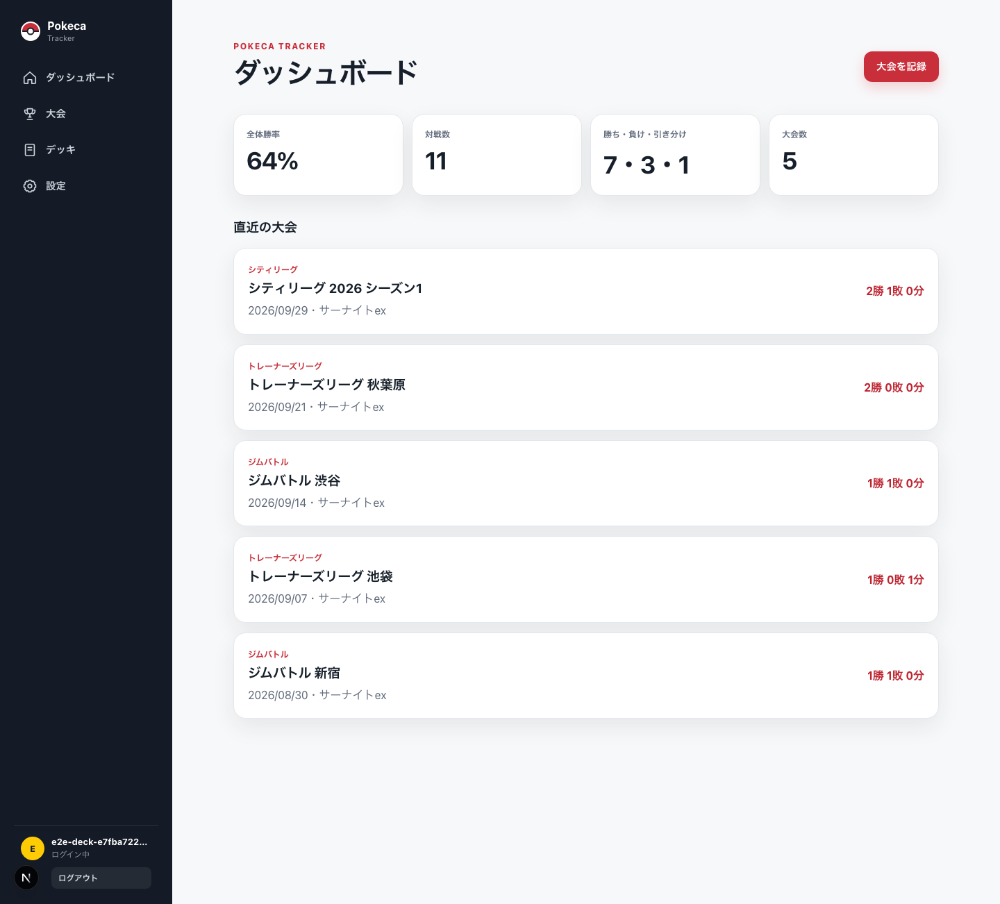
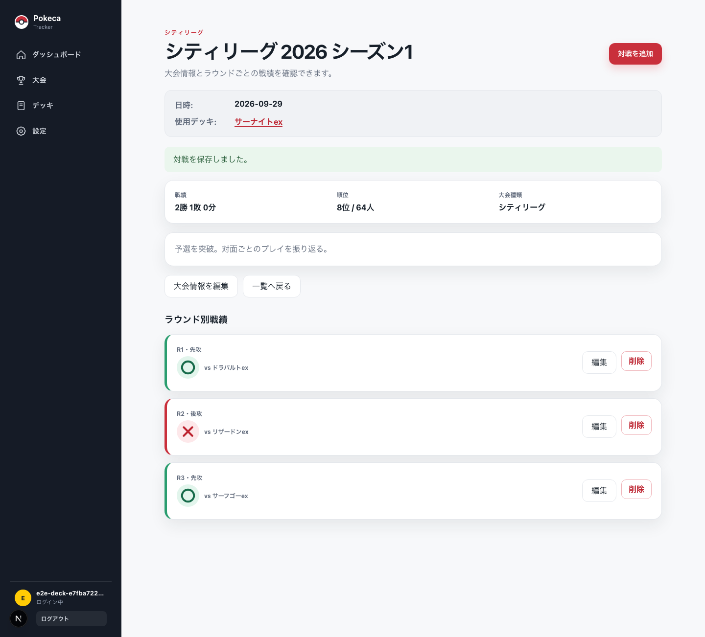
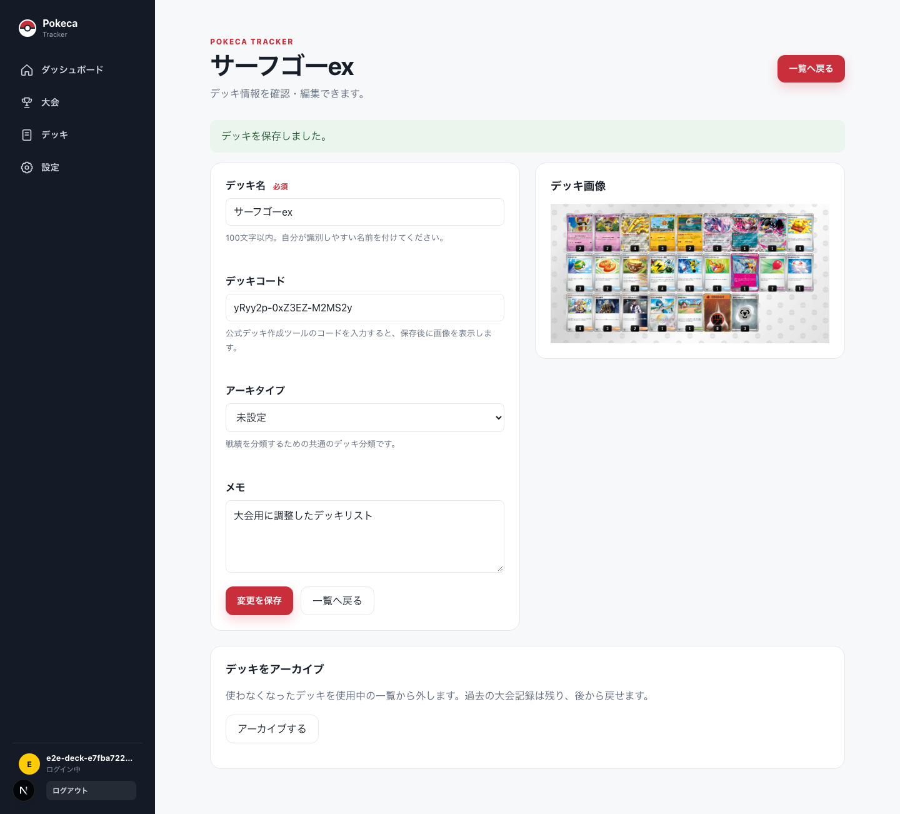

デッキを管理
デッキ名やアーキタイプ、デッキコード、メモを登録。使わなくなったデッキも履歴を壊さずアーカイブできます。
Pokeca Trackerは、ポケモンカードの大会・対戦結果・使用デッキをまとめて記録し、自分の戦績を振り返るためのWebアプリです。
現在開発中MVPを実装し、本番公開に向けて改善を続けています。
現在は限定公開中です。ログインは開発者のみ利用できます。


Why I built it
大会で得た気づきを次に活かすには、勝敗だけでなく「どのデッキで、何と対戦し、先攻・後攻のどちらだったか」を残す必要があります。散らばりがちな記録を一か所に集め、振り返りやすくするために開発しました。
Core experience
デッキ名やアーキタイプ、デッキコード、メモを登録。使わなくなったデッキも履歴を壊さずアーカイブできます。
大会種別、順位、参加人数に加えて、各ラウンドの対面、勝敗、先攻・後攻を一試合ずつ記録できます。
ダッシュボードで全体勝率、対戦数、勝敗内訳、直近の大会を集計。入力した結果をすぐ次の振り返りにつなげます。
Product screens
横にスライドして画面を見る
